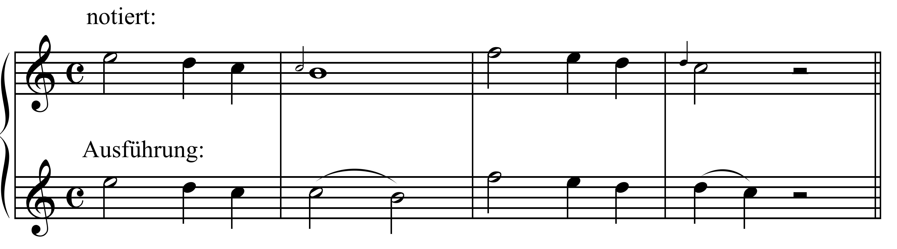
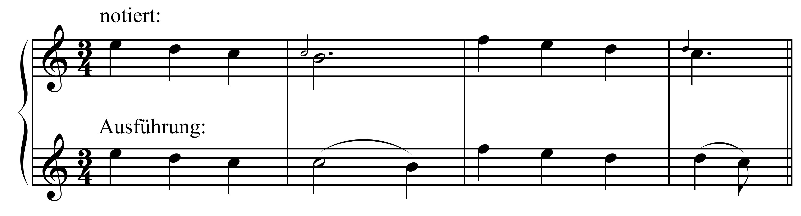
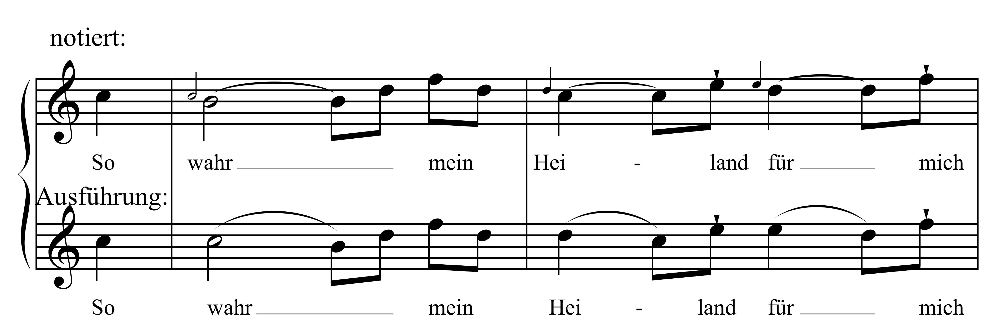
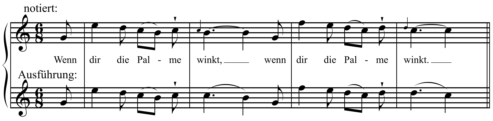

Zur Frage der Appoggiaturen in Webers "Freischütz":
Zeitgenössische Theorie und musikalische Praxis, erläutert am Beispiel der Szene und Arie der Agathe Nr. 8
Von Mitra Behpoori, Maya Sampson, Sebastian Schlicht und Joachim Veit [vorläufige Version]
Vorbemerkung
Die Frage, inwieweit Webers Partitur des Freischütz noch die Kenntnis zeitgenössischer Verzierungs- und Appoggiaturpraktiken voraussetzt, ist in der Weber-Literatur bislang eher am Rande behandelt worden. Praktisch unbeachtet blieb der Umgang der musikalischen Praxis mit diesem Problem. Der vorliegende, aus einem Seminar im Wintersemester 2016/2017 hervorgegangene Beitrag fasst einerseits einschlägige Hinweise in der zeitgenössischen Musiktheorie bzw. in Gesangsschulen zusammen, andererseits greift er auf die einzigartige Sammlung akustischer Quellen im Archiv der Stimmen der Sächsischen Landes- und Universitätsbibliothek Dresden (nachfolgende SLUB) zurück, um die offensichtlich häufige Diskrepanz zwischen Theorie und Praxis zu illustrieren und gleichzeitig zu verdeutlichen, mit welcher Spannbreite der – offensichtlich nur teilweise auf Traditionen des 19. Jahrhunderts zurückgehenden – Interpretationen noch im 20. Jahrhundert zu rechnen ist.
I. Zeitgenössische Theorie
1. Mögliche Anknüpfungspunkte Webers
Will man klären, woran sich Weber (außer an der von ihm täglich erlebten musikalischen Praxis) in der Frage der Appoggiaturen orientiert haben könnte, liegt es für die Zeit bis 1810 zunächst nahe, sein im Jahr 1811 angelegtes Verzeichnis zu konsultieren, das dokumentiert, was der Komponist an musiktheoretischen Werken besessen hat.
- Friedrich Wilhelm Marpurg, Anleitung zur Singcomposition, Berlin 1758
- P. Joseph Lederer, Neue und erleichterte Art zu Solmisiren, nebst andern Vortheilen, die Singkunst in kurzer Zeit zu erlernen, 2. Auflage, Ulm 1796 [1. Auflage 1763]
- C. P. E. Bach, Versuch über die wahre Art das Klavier zu spielen, 3. Aufl. Leipzig 1787
- Johann Jacob Walder, Anleitung zur SingKunst in kurzen Regeln für Lehrer und [...] Schüler, Zürich 1788
2. Fröhlichs Kapitel "Von den wesentlichen Manieren"
Joseph Fröhlich unterscheidet zwei "Gattungen von Vorschlägen": a) "die veränderlich langen" und b) "die unveränderlich kurzen" – die ersteren entsprechen dem, was aus heutiger Sicht mit den "Appoggiatur-Regeln" in Verbindung gebracht wird, bei den zweiten handelt es sich um gewöhnliche Vorschläge.
An mehreren Stellen wird deutlich, dass die Gestalt der "kleinen Nötchen", mit denen diese "Vorschläge" in der Notation bezeichnet werden, wenig mit der genannten grundlegenden Unterscheidung zu tun hat – zwar sieht Fröhlich selbst Werte ab Sechzehntelnote und kleiner als Hinweis auf das Vorliegen eines kurzen Vorschlags an, gesteht aber zu, dass "Tonsetzer häufig, theils aus Nachlässigkeit theils aus Unkunde unveränderlich kurze Vorschläge anzeigen, wo doch [...] ein langer stehen müsste" (S. 56). Insofern wird klar, dass der rhythmische Wert solcher kleinen Noten in der Regel nichts über ihre Zuordnung zur Appoggiatur bzw. zum kurzen Vorschlag aussagt.
Für die Dauer der "langen Vorschläge" (d.h. der Appoggiatur) gibt Fröhlich folgende vier Möglichkeiten an:
- In geradtaktigen Rhythmen nimmt der Vorschlag (die kleine Note) den halben Wert der folgenden an ("Den halben Werth der folgenden Note bekommen sie, wenn diese 2 gleiche Theile hat"): 
- Vor punktierten Noten erhält der Vorschlag zwei Drittel des Werts der folgenden ("Vor einer punktirten Note, die immer in 3 Theile getheilt werden kann, bekömmt der Vorschlag 2 Theile, und die Hauptnote nur einen Theil"): 
- Folgt eine Note, an die eine kürzere angebunden ist, erhält der Vorschlag den vollen Wert der folgenden Note ("Ist an die Hauptnote auf derselben Stufe noch eine kürzere gebunden, so bekömmt der Vorschlag den vollen Werth der Hauptnote"): 
- Dies gilt auch, wenn die erste der beiden mit Haltebogen versehenen Noten punktiert ist ("Auch giebt man diese Regel, wenn die erste von beyden Noten punktirt ist."): 
3. Die identische Darstellung in Fröhlichs Vorlage, der Singe-Schule von Johann Friedrich Schubert
Johann Friedrich Schubert überschreibt in seiner Neue[n] Singe-Schule oder gründliche und vollständige Anweisung zur Singkunst in drey Abtheilungen mit hinlänglichen Uibungsstücken (Leipzig: Breitkopf & Härtel, o.J. [ca. 1790]) sein III. Kapitel (wie von Fröhlich übernommen): "Von den wesentlichen Manieren" (S. 50) und definiert diese als "Verzierungen, die an die Stelle simpler Töne gesetzt werden": "Sie dienen, der Melodie mehr Glanz zu geben, den Gesang reizender zu machen und mehr Mannigfaltigkeit hervorzubringen". Ferner heißt es: "Sie werden in den Gesangstücken entweder vom Komponisten selbst (theils mit kleinen Nötchen, theils mit ihren bestimmten Zeichen) angedeutet, oder die Eintschaltung derselben bleibt den Ausübern überlassen. Im ersten Falle kann der Ausüber eines Tonstücks nie einen Fehltritt thun; im zweiten erfordert dies aber mehr Ueberlegung, Geschmack und Auswahl die Manieren so anzubringen, dass sie dem Charakter eines Tonstücks völlig angemessen und der Harmonie nicht zuwider sind." (S. 50)
Schubert gibt dann die bei Fröhlich übernommenen Notenbeispiele und stellt damit die vier Arten der "veränderlich langen" "Vorschläge" dar (S. 51, vgl. die Identität mit den Angaben bei Fröhlich):
- [1.] "Den halben Werth der folgenden Note bekommen sie, wenn diese zwei gleiche Theile hat."
- [2.] "Vor einer punktirten Note, die bekanntlich in drei Theile getheilt werden kann, bekommt der Vorschlag zwei Theile, und für die Hauptnote bleibt nur ein Theil."
- [3.] "Ist aber an die Hauptnote auf derselben Stufe noch eine kürzere gebunden, so bekömt der Vorschlag den völligen Werth der Hauptnote [...]".
- [4.] "Auch findet diese Regel statt, wenn die erste von beiden Noten punktiert ist." Hingewiesen wird noch darauf, dass die Vorschläge "mit Nachdruck und etwas stärker als die Hauptnote angegeben werden" müssten, "weil sie gegen den Bass oder irgend eine andere Stimme dissonirend sind, und die Dissonanzen immer nachdrücklicher als die consonirenden Intervalle angeschlagen werden müssen."
Mit den angegebenen Regeln stellt sich Schubert in eine Tradition des 18. Jahrhunderts, die sich auch bei anderen, Weber mit einiger Sicherheit bekannten, Theoretikern in fast identischer Form findet
4. Vergleichbare Ausführungen bei Lepold Mozart, Carl Philipp Emanuel Bach und Johann Gottlieb Türk
Leopold Mozart bespricht die Vorschläge im 9. Hauptstück seiner Gründlichen Violinschule (hier zitiert nach der 3. Auflage Augsburg 1789, 1. Auflage 1756), wobei er ab- und aufsteigende unterscheidet (letztere seien die "natürlichsten" heißt es auf S. 195). Auch er verwendet den Ausdruck "lange Vorschläge", von denen "zwo Gattungen" zu unterscheiden seien, deren "eine länger als die andere ist" (S. 195).
- "§. 3. [...] Wenn der Vorschlag vor einer Viertheilnote, Achttheilnote oder Sechzehntheilnote stehet, so ist er schon ein langer Vorschlag; er gilt aber nur den halben Theil der Note, die nachkömmt. Man hält also den Vorschlag die Zeit, so der halbe Theil der Note beträgt; nachdem aber schleift man die Note ganz gelind daran. Was die Note verliert bekömmt der Vorschlag." (S. 195)
Leopold Mozart gibt auch an, warum diese Vorschläge nicht als "normale" Noten notiert werden: Dies könne zur Folge haben, dass diese dann weiter ausgeziert würden – genau dies zu vermeiden, würde durch die Art der Notation aber bewirkt (S. 196). - "§. 4. Die zwote Art der langen Vorschläge, die man die längern Vorschläge nennen mag, findet man erstlich bey punctierten Noten; zweytens, bey halben Noten, wenn sie im 3/4 Tacte gleich Anfangs stehen [...] In diesen Fällen wird der Vorschlag länger gehalten. Bey den punctierten Noten hält man den Vorschlag so lang, als die Zeit der Note austrägt; anstatt des Puncts hingegen nimmt man erst den Ton der Note, doch so, als wenn ein Punct dabey stünde: [...] Wenn man aber eine halbe Note bey den oben angemerkten zweenen Zufällen, mit dem Vorschlage abspielen will: so bekömmt der Vorschlag drey Theile der halben Note, und bey dem vierten Theile nimmt man erst den Ton der halben Note. [...] Es giebt noch andere Fälle wo man den längern Vorschlag braucht, die aber alle unter die Spielart der punctierten Noten gehören." (S. 196f.)
Bei Carl Philipp Emanuel Bach heißt es im ersten Teil seines Versuchs in der zweyten Abtheilung des zweiten Hauptstücks (Berlin 1753, S. 65) zu den veränderlichen Vorschlägen vereinfacht:
- §. 11. Nach der gewöhnlichen Regel wegen der Geltung dieser Vorschläge finden wir, daß sie die Hälfte von einer folgenden Note, welche gleiche Theile hat, [...], und bey ungleichen Theilen [...] zwey Drittheile bekommen.
In Teil 2 (Berlin 1762) weist er im Kapitel 25 ausdrücklich nochmals darauf auf den Vorhalts-Charakter der Vorschläge hin: "Die Vorschläge halten die Harmonie auf, welche der Grundnote eigentlich zukommt" (S. 185) und bespricht dann nochmals ausführlicher die veränderlichen Vorschläge (die bei ihm eindeutig sowohl von unten als auch von oben möglich sind).
Schließlich sei hier noch Daniel Gottlog Türk genannt, der in seiner Clavierschule oder Anweisung zum Clavierspielen für Lehrer und Lernende (Leipzig u. Halle 1789) die Unterscheidung in "veränderlich lange" und "unveränderlich kurze" Vorschläge beibehält und in Kapitel III dazu u.a. ausführt:
- "§. 10. [...] Unter der ersten Gattung versteht man diejenigen Vorschläge, welche eine längere oder kürzere Dauer bekommen, je nachdem sie vor einer längern oder kürzern Note stehen. Sie verhalten sich größtentheils wie Dissonanzen zu dem Basse ec. und kommen gewöhnlich nur vor anschlagenden Noten auf dem guten Takttheile ec. vor. In langsamer Bewegung finden sie auch wohl auf jedem Takttheile (oder Gliede) statt." (S. 208)
- "Lang heißt ein Vorschlag, wenn er entweder die Hälfte oder einen noch größern Theil der Dauer der folgenden Note bekommt. So würde z.B. in langsamer Bewegung ein Vorschlag, welcher vor einem Sechzehntheile die Dauer eines Zweyunddreyßigtheiles erhielte, noch immer lang heißen." (Anm. 1 auf S. 208)
- "§. 11. Die Dauer der gewöhnlichsten veränderlich langen Vorschläge läßt sich durch folgende drey Hauptregeln bestimmen.
Erste Regel: Der Vorschlag bekommt die halbe Dauer der folgenden Noten, wenn diese in zwey gleiche Theile (Hälften) getheilt werden kann." (S. 209f.) - "§. 12. Zweyte Regel: Vor punktirten (dreytheiligen) Noten bekommt der Vorschlag zwey Theile, (d.h. die völlige Dauer der Note) für die Hauptnote selbst bleibt folglich nur Ein Theil (oder die Dauer des Punktes) übrig." (S. 210)
- "§. 13. Dritte Regel: Der Vorschlag bekommt die völlige Dauer der folgenden Note, wenn an diese eine gleich hohe (gewöhnlich kürzere) gebunden ist [...|" (S. 212)
Es zeigt sich also, dass trotz unterschiedlichster Notierungsformen doch über einen größeren Zeitraum hinweg in der grundsätzlichen Behandlung weitgehende Einigkeit zu bestehen scheint. Auch Türk bringt noch Beispiele für veränderliche Vorschläge von oben und unten, die in der Literatur teils geäußerte Skepsis gegenüber Appoggiaturen von unten scheint also zumindest für diesen Zeitraum unberechtigt.
Aus Webers Umkreis zu nennen sind an dieser Stelle u. a. noch die Violinschule von Louis Spohr. Mit erleuternden Kupfertafeln., Original-Ausgabe, Wien: Tobias Haslinger, PN: "T. H. 6050." [1832], die ebenfalls die Weitergeltung der grundsätzlichen Regeln zeigt (vgl. S. 170), ferner Carl Baermanns Klarinetten Schulde (revidierte Ausgabe von Oskar Schubert, Teil 1, op. 63 und Teil 2, op. 64, Reprint Offenbach: André; vgl. dort S. 25-26) oder Anton Bernhard Fürstenau, Die Kunst des Flötenspiels op. 138 (hg. von Nikolaus Delius, Buren, 1991, dort S. 76f.). Zu weiteren zeitgenössischen Beschreibungen vgl. Clive Brown, Classical & Romantic Performing Practice 1750–1900 (Oxford 1999, Reprint 2002).
5. Die Erläuterungen Heinrich Dorns zur Arie der Agathe (Nr. 8)
Der als Komponist, Kapellmeister und Musikkritiker tätige Heinrich Dorn (1804–1892) veröffentliche 1874 in der Neuen Berliner Musikzeitung einen mehrteiligen Beitrag unter dem Titel Die grosse Arie der Agathe. Eine gesangliche Studie (Jg. 28, Nr. 23, 4. April 1874, S. 177–178; Nr. 24, 11. Juni 1874, S. 185–186; Nr. 25, 18. Juni 1874, S. 193–194 u. Nr. 26, 25. Juni 1874, S. 201–202). Darin setzt er sich einerseits mit zeitgenössischen Gepflogenheiten bei der Interpretation dieser Arie auseinander, zum anderen behandelt er auch die Frage der Appoggiaturen sowie einige spezielle Ausführungsprobleme. Im einzelnen spricht er folgende Stellen an:
| a) zur Frage der Appoggiaturen: | |
|---|---|
| T. 3 | Bei "Schlummer" sei die "Gelegenheit zur ersten von Weber nicht hingeschriebenen Appoggiatur (nemlich h a, statt des monotonen a a), welche Veränderung hier unzweifelhaft ist, während bei späteren Stellen Mehrdeutigkeit eintritt". |
| T. 22, 31 | Die "kleine[n] Vorschlagsnoten" bei dem Text "Sternenkreise" (T. 22) bzw. "Himmelshalle" (T. 31), deren erste durchgestrichen, die zweite aber ohne Strich notiert sei (Dorn bezieht sich hier auf die Peters-Ausgabe) müsste "die erste kurz und die zweite lang gesungen werden. In der Praxis aber hören wir es gerade umgekehrt [...] was auch offenbar dem Gefühl mehr zusagt." Interessant erscheint hier die Begründung: "Bei der ersten Stelle würde der kurze Vorschlag etwas unpassend Naives ausdrücken, bei der zweiten begünstigt er dagegen das von der Original-Agathe (Caroline Seidler) unter Weber’s Direction angebrachte Portament: (die Vorausnahme des nachfolgenden e) [NB]. Doch würde auch der lange Vorschlag dem Charakter nicht entgegenstehn. Dieser Rest zopfiger, mittelalterlicher Schreibart (...) wird nun hoffentlich und mit ihm jede Zweideutigkeit aus unserer Notenschrift verschwunden sein, so dass nur noch die kurzen Vorschläge durch kleinere Nötchen dargestellt werden, wobei dann der Durchstrich auch ganz überflüssig ist." (S. 186) |
| T. 35 | Das Wort "Sterne" erhalte "statt der beiden vorgeschriebenen e e – die Appoggiatur fis e. |
| T. 37 | "Zweifelhafter" sei die Veränderung bei dem Text "dort in der Berge Ferne scheint ein | Wetter": Die Noten bei "Ber-(ge)", "Fer-(ne)" und "ein" "könnten Varianten erleiden, mämlich h a (statt a a), gis fis (statt fis fis) und fis gis (statt fis fis). Gegen die erste derselben erkläre ich mich entscheiden; gerade in der Monotonie des 5 Mal wiederholten a liegt das Düstere, welches hier zum Ausdruck kommen soll. Dagegen klingt mir die Repetition des fis auf 'Ferne' sehr steif, so dass ich hier das gis fis vorziehe; die beiden Schlussnoten desselben Taktes möchte ich aber nicht geändert wissen, um den Uebergang nach Moll zu vermitteln, der durch das Vermeiden der Durterz gis schon geahnt werden kann." (S. 193) |
| T. 41–60 | Dorn fügt hier in seinem Notenbeispiel (in die durch den Athem abweichend zu gliedernde Wiederholung) dieselben Appoggiaturen wie in Teil 1 ein (auch das abschließende, angeblich auf Caroline Seidler zurückgehende Portament in T. 58). |
| T. 73 | Das abschließende Wort "Stille" in T. 73 würde Dorn "ohne Appoggiatur lassen; es klingt lauschiger, geheimnisvoller, waldeinsamer, als ein mir nicht zusagendes f e. |
| T. 74 | An dieser Stelle vertrage "die sich inzwischen an der Nachluft erfreuende Grille sehr wohl ein g statt des ersten fis". (S. 194) |
| T. 79–80 | Die "gewohnter Weise angebrachten Appoggiaturen" bei "Schritte" (c h) und "Mitte" (e d) "behagen" Dorn wenig, "da ich die auf’s Höchste gespannte Erwartung (diese Stelle wird meistens im Tempo verschleppt) mit mehr charakterisirender Eile durch die doppelten h und d wiedergegeben finde." (S. 194) – Nach seiner Beschreibung waren diese Appoggiaturen aber verbreitet. |
| T. 104–105 | Bei der Stelle "o süße Hoffnung" erhalte das Wort Hoffung "selbstverständlich" die Appoggiatur d c. (S. 201) |
| T. 143, 145 | Bei "be-|währen" sei jeweils eine Appoggiatur anzubringen (vgl. zur zweiten Stelle auch die Anmerkung unter b). |
| b) spezifische Probleme: | |
|---|---|
| T. 13–15 | Bei "Welch’ schöne Nacht!" sei eine "lange messa di voce auf dem zweigestrichenen fis zu verführerisch" und damit klinge das abschließende h meist "ganz tonlos"; daher habe man "jetzt allgemein die Abänderung" in den Text "wie schön die Nacht!" vorgenommen. Allerdings dürfte das nicht dazu führen, sich nun "mit aller Kraft [...] auf den Schluss zu stürzen" (also das "die Nacht!" im ff zu betonen. |
| T. 73f. | An dieser Stelle argumentiert Dorn, dass die Sängerin vor Eintritt des Recitativs nichts verliere, "wenn sie das Orchester erst ruhig den Satz mit der schönen Sexten- und Terzen-Begleitung (Bratsche und Violoncell) ausspielen lässt, und dann erst mit dem vorgeschriebenen Auftakt ('nur die Nachtigall') hinter dem ersten Viertel des Schlusstaktes einsetzt. (S. 194) |
| T. 163 | Bei der Verteilung der Silben an der Stelle "Himmel nimm" findet Dorn die abweichende Silbenverteilung, die er bei einer Schülerin Wiecks gehört habe (die beiden ersten Achtelnotennoch zur Silbe "Him-") günstiger, denn "die meisten Agathen wühlen mit Wollust in der melismatischen Figur umehr, und entstellen dann wirklich die Sprache"; es müsse also die halbe Note besonders hervortreten (S. 194). |
| T. 106–107 | Dorn bezeichnet es "geschmacklose Manier der meisten Sängerinnen, wenn sie das letzte Viertel e vor dem 'Muth' fortissimo in infinitum ausdehnen"; zwar sei ein "auf diese Note gelegter Nachdruck" (trotz unbetonter kurzer Silbe) "immer von Wirkung"; er empfiehlt das vorherige dis mehr zu halten. (S. 201) |
| T. 117f., 136f., 162f. | Hier spricht Dorn von einer "hübsche[n] gesangliche[n] Nüance: zwei durch eine Pause getrennte Takte zu verbinden, indem die erste Note des zweiten Taktes leise angeschlagen wird" (S. 201). Nur im dritten Fall habe "Weber den Uebergang nach dem vierten Viertel h wirklich vorgeschrieben [bei "Hoffnung an"], und nicht etwa wie im ersten Beispiel den Takt mit der Viertelpause ausgefüllt".Allerdings hält Dorn dies an in T. 162f. für ein "auffälliges und bei dieser Gelegenheit überflüssiges Verfahren", da die Textwiederholung hier "gerade eine Trennung" vertrage. |
| T. 144f. | Dorn spielt hier auf die Steigerung der zweimaligen Phrase "will sich morgen treu bewähren" (T. 141ff. bzw. 143ff.) an, die mit dem Aufschwung der Melodie (zunächst Sext-, dann Oktavsprung) verbunden ist. Bei Weber sei diese Steigerung "jedoch bei dem sehr schnellen Tempo erschwert worden durch die rhythmische Eintheilung, denn das höhere Achtel fis verschwindet gegen das eine Terz tiefer liegende dis; es singen daher die meisten Agathen die zweite Stelle in der gleichen Mensur wie die erste" (S. 202). Er gibt dann den Rhythmus Achtel-Vierel-Achtel und die folgende Appoggiatur (e d) wieder. Keinesfalls dürfe man aberim Umkehrschluss nun den Rhythmus der zweiten Stelle auf die erste übertragen |
| T. 156–159 | Dorn gibt die Stelle T. 156 in folgender Orthographie an: "Himmel, nimm des Dankes Zähren" (bei Weber im Autograph: "Himmel nimm des Dankes Zähren!") und verweist darauf, dass ein Deklmator selbstverständlich das Komma als Atemzeichen nähme; "der Musiker hingegen fühlt heraus, dass bei dem gebrochenen E-dur-Akkord der beiden ersten Takte die einzige durchgehende Note fis nicht von ihrem darauf folgenden e abgetrennt werden darf. Er empfiehlt, nach diesem e zu atmen, da dies auch textlich zu rechtfertigen sei. Allerdings: "in streitigen Fällen gebe ich immer der Musik den Vorrang". (S. 202) |
Insgesamt handelt es sich bei Dorns Angaben also einerseits um einen Rückbezug auf eine noch bewusste Appoggiatur-Praxis, andererseits in zahlreichen Fällen aber um sehr subjektive Interpretationen, die allerdings im Grunde der schon bei Fröhlich und Schubert anzutreffenden Einschätzung entsprechen, dass es vielfach dem individuellen Geschmack überlassen bleiben müsse, wo diese Manieren anzubringen seien.
6. Zur Behandlung der Appoggiaturfragen in den Notenausgaben und in der weiteren (Weber-)Literatur
Die Verleger Henry und Theodor Litolff waren offensichtlich die ersten, die sich in ihren Publikationen der Frage der Appoggiaturen im Freischütz annahmen. In dem von Max Schultze unter der Verlagsnummer Collection Litolff No. 68 [vor 1875] publizierten Klavierauszug sind erstmals Appoggiaturen im Notentext eingetragen und durch Sternchen gekennzeichnet bzw. wird durch arabische Kleinbuchstaben auf die originale Notierung verwiesen. Dazu heißt es im Vorwort des Herausgebers: "Eine fernere Eigenheit besitzt der Klavier-Auszug darin, dass Vorhalte und Verzierungsnoten so gedruckt sind, wie sie gesungen bezw. gespielt werden müssen. Bei allen Aenderungen der Original-Lesart ist in der vorliegenden Ausgabe die Original-Lesart am Fusse der betreffenden Seite angegeben; nur die ausgeschriebenen Vorhaltsnoten sind der Einfachheit halber mit * bezeichnet worden." (S. 2).
Adolf Beyschlag bezeichnet in seiner Ornamentik der Musik (1. Auflage Leipzig 1908, 2. Auflage 1953) die Appoggiaturen in diesem Klavierauszug des Litolff-Verlags als "authentisch". Er weist in diesem Kontext darauf hin, dass an den Bühnen von Berlin und Dresden "an welchen der Komponist sein Werk persönlich einstudierte und dirigierte", die "Wiedergabe auch heute noch in allen Einzelheiten" übereinstimme und dadurch "eine Gewähr für die Unverfälschtheit der Tradition" biete (ebd., S. 234). Er merkt dazu an: "Derselbe Ausführungsmodus herrschte bis vor wenigen Jahrzehnten auch bei den übrigen deutschen Bühnen. Die »Collection Litolff« gibt ihn in ihrem neuen Klavierauszug (Nr. 2214) ziemlich genau wieder, während die »Universal Edition« (Nr. 224, W. Kienzl) sich vielfach der korrumpierten Überlieferung anschließt."
Dieses Urteil mutet bezüglich des Auszugs von Wilhelm Kienzl (PN: "U. E. 224.") eigenartig an, denn in der Arie Nr. 8 sind in dessen Auszug die bei Litolff noch durch Sternchen markierten Appoggiaturen bzw. durch Buchstaben gekennzeichneten Vorschläge identisch – allerdings nun ohne Kennzeichnung – übernommen und es heißt auf S. 2: "Die Appoggiaturen sind in dieser Ausgabe den Singstimmen so einverleibt worden, wie sie vom Sänger ausgeführt [Original: unterstrichen] werden sollen."
Vergleicht man die Angaben des Litolff-Klavierauszugs mit den Angaben Heinrich Dorns, so finden sich weitgehende Übereinstimmungen. Lediglich in T. 73 ("Stille") notiert Schultze eine Appoggiatur, wo Dorn sie eher vermieden wissen wollte; dasselbe gilt für T. 79f. ("Schritte", "Mitte"). Schultze hat eine zusätzliche Appoggiatur bei "schlagen" (T. 171) vermerkt und gibt für den Übergang in T. 162 ("Hoffnung an") die rhythmische Lösung Viertel – Halbe – Viertel an, ebenso für den Vorschlag in T. 185 ("entgegen ihm") die Folge Viertel – Halbe.
Auch Beyschlag folgt in seinen Beispielen der Schultzeschen Version (aufgenommen sind bei ihm auf S. 238f. in gleicher Weise die T. 3, 22, 31, 79 und 80 als Beispiele). Guido Binkau hat 1965 in seinem Beitrag Appoggiaturen in Webers 'Freischütz' (Die Musikerziehung 19 (1965/66), S. 66–69, auf den Peters’schen Klavierauszug ohne Singstimmen Bezug genommen (Partitions d’Opéras et d’Oratorios pour piano seul (sons paroles) arrangées par Brissler, Jadassohn, Ulrich, Wittmann; es handelt sich vermutlich um den Klavierauszug mit der PN 4583; Datierung: ca. 1867; Exemplar D-B, 55 NA 751 (Nr. 2)): In diesem Arrangement finde man nun die "ausgeschriebenen Vorhalte". Dies sei zwar "kein Beweis für die Übung zu Webers Zeiten. Doch immerhin für die übliche Ausführungsweise in einer Epoche, die dem Komponisten um 100 Jahre näher stand als die unsrige" (S. 67). Geringfügig abweichend von dem Vorstehenden sind folgende Takte vermerkt:
| T. 22 | "Sternenkreise": "kurz bzw. halblang (sogen. Sängervorschlag)" |
| T. 35 | "gold’nen Stern": hier sei "von der Möglichkeit eines Vorhaltes merkwürdigerweise kein Gebrauch gemacht" |
| T. 74 | Bei "Grille" mache der Auszug von der "Appoggiaturmöglichkeit ebenfalls keinen Gebrauch". |
Einen ähnlichen Ansatz verfolgt Georg Günther, der am Beispiel von Bearbeitungen für zwei Flöten (angefertigt ca. 1830) den Preghiera-Teil der Nr. 8 analysiert (Weberiana, Heft 9, 1999, S. 34–38). Er liest die dort mehrfach eingefügten "Doppelschläge" als Beleg für eine Übertragung der Gesangs- auf die Instrumentalpraxis (solche Doppelschläge sind z.B. nach den punktierten Anfangsnoten in T. 19, 22 und 25 eingefügt), zugleich ist die Vorschlagsnote am Ende von T. 22 in gleichmäßige Sechzehntel aufgelöst, ebenso aber die beiden letzten Noten in T. 31 als zwei Sechzehntel notiert. (In seinem Beitrag geht es allerdings mehr um Auszierungen, die Appoggiaturen werden nur am Rande erwähnt.)
Wenn Hartmut Krones und Robert Schollum in ihrem Band Vokale und allgemeine Aufführungspraxis (Wien u. Köln 1983) im Hinblick auf die Appoggiatur-Praxis schreiben: "Erst Ende des 19. Jahrhunderts erfolgte aus unbegreiflichen Gründen (mißverstandene 'Werktreue') der Bruch mit dieser Tradition, auf die weitgehend zurückzugreifen heute nottut" (ebd., S. 201), verweisen sie anschließend auf die noch Mitte des Jahrhunderts in den Anweisungen Friedrich Schmitts (Große Gesangsschule für Deutschland, München 1854, S. 243) gelehrte Praxis, die auch in etlichen Instrumentalschulen der Zeit noch ihre Spuren hinterlassen hat.
Die in neuerer Zeit umfangreichste Zusammenschau von theoretischen und praktischen Beiträgen zu Appoggiatur-Fragen hat 1999 Clive Brown vorgelegt. In seiner Monographie Classical & Romantic Performing Practice 1750–1900 (Oxford 1999, Reprint 2002) werden die unterschiedlichsten Quellen für den gesamten Zeitraum ausgewertet. Auch er konstatiert: "It is clear from a mass of manuscript and printed music [...], as well as from reiterated complaints [...], that considerable scope for misunderstandig remained throughout the eighteenth century" (S. 469). Dennoch bestätigt auch gerade dieser Band, dass die Praxis der Zeit offensichtlich nicht mehr ausreichend im heutigen Musikleben berücksichtigt wird, verdeutlicht aber auch, dass nicht alle damit zusammenhängenden Probleme gelöst sind.
Dennoch scheint im Falle des Freischütz vor dem Hintergrund der theoretischen und aufführungspraktischen Literatur weitgehend Übereinstimmung im Umgang mit Appoggiaturen und mit der Frage der rhythmischen Behandlung von Vorschlägen zu geben. Im zweiten Teil dieses Beitrags soll nun die Frage untersucht werden, inwieweit sich dieses Wissen noch in den frühen Aufnahmen der Arie Nr. 8 widerspiegelt und ob sich hier Veränderungen zeitlich festmachen bzw. allgemeinere Tendenzen des Umgangs mit interpretatorischen Problemen beobachten lassen.
II. Musikalische Praxis
[z. Zt. in Arbeit]
Link zum gegenwärtigen Arbeitsstand: Zur Datei mit den Klangbeispielen